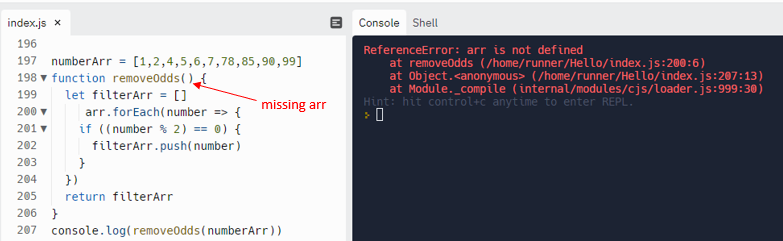
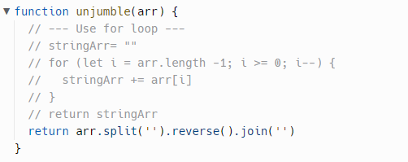

One simple problem that I encountered was forgetting to define a parameter for a function as shown in the screenshot below. When I first noticed the error message, I overcomplicated it
by thinking that it was my algorithm that triggered the issue. I then tried rewriting the code in different ways while still ignoring the parameter of the function, so I got stuck again
and again.

After a few attempts, I started getting a bit frustrated and decided to return to the original piece of code I wrote as that was the one that made most sense to me. I then broke it down
to smaller chunks and added some console.logging along with googling the displayed error message. Eventually, a light bulb came on in my mind and I realized that I needed to add a
parameter in the round brackets by the function’s name.
The moment I hit ‘run’ button and received ‘test passed’ message, I was over the moon. For a moment, I did mumble to myself ‘I was so silly to spend an hour on fixing something that was
very basic’. Upon looking back at my approach, I, however, changed my attitude and embraced the issue I faced. The lesson I learned from resolving that simple problem was to never doubt
myself. Because I underestimated my logic, I kept on changing my approach which wasn’t the cause of the issue. In addition, I learned how to combine different problem-solving techniques
to help me unfold the question.
While trying to pass the ‘unjumble’ test in JavaScript Olympics, I managed to refactor my code in a way that makes it slightly more elegant according to my standard. Initially, it took 5
lines of code to achieve the same result as what was later accomplished by just one line of code.

Through the research conducted on how to reverse a string in JavaScript, I discovered there are many ways that yield the same outcome and I tried using the shortest one and it worked. I
felt happy when I could tackle the challenge in various manners. That really helped hone my knowledge and skills and gave me the confidence that if I were to encounter a similar situation
in the future, I could look at resolving the issue from different angles rather than fixating on a single method.
The lesson I learned was that there are different paths that lead to the same result, and though I have already solved the puzzle, I can always spend addition time reflecting on how I did
it to see whether there’s room for improvement. Elegant code is no doubt the go-to practice for every developer as it helps simplify the code, making it easier to understand or modify it
when needed